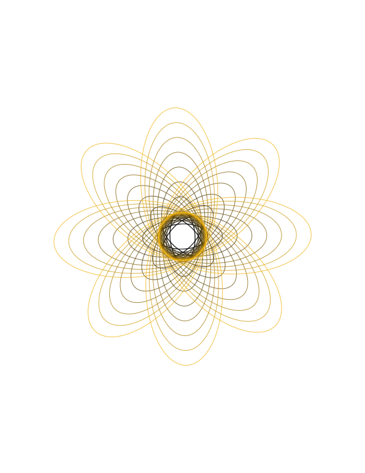
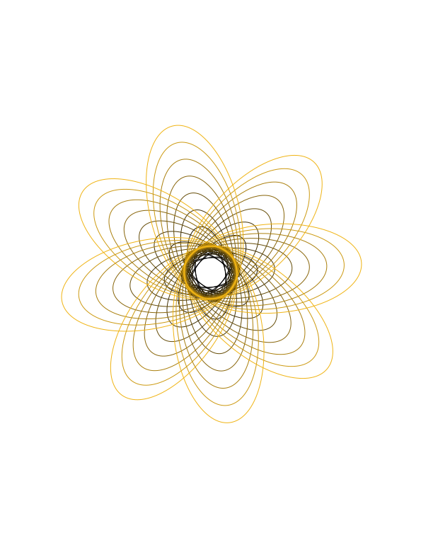
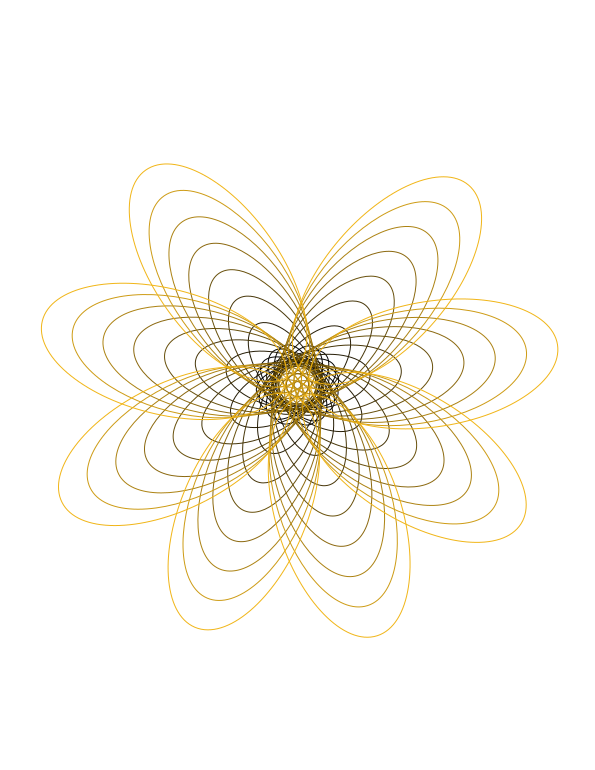
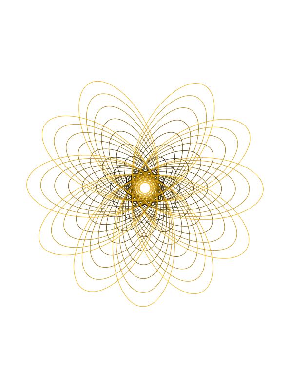
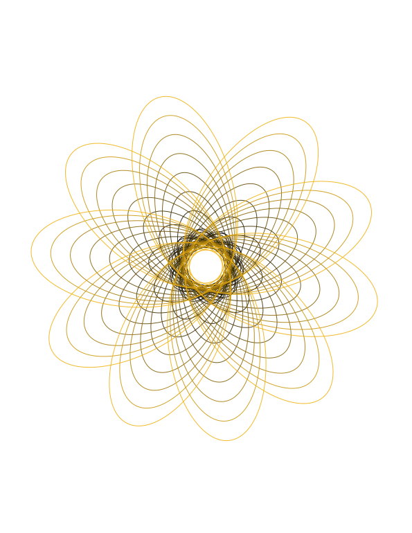
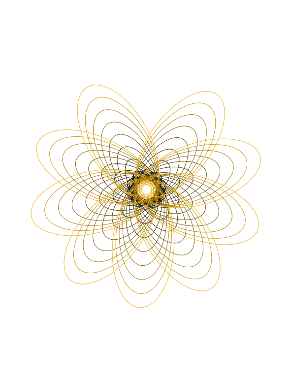

For this assignment, I wanted to build on my previous sketch and use the p5.Polar library to create a blooming flower pattern. I chose a black-and-yellow color scheme following my previous sketch, starting with a small center that expands outward layer by layer. While subtle color gradients and transparent fills don't show up on a pen plotter, they give the screen version a nice sense of depth as the color fades toward the outer petals. I also added mouse interaction mapped to vertical movement, moving up resizes the flower smaller while making the line details feel sharp and dense, and moving down expands the flower into a larger, softer shape.
Pressing 's' or 'S' exports the final drawing as an SVG file.
The main iterative process uses a for loop to draw concentric layers from the inside out. With each layer, several elements shift step by step. The line weight gets thicker (strokeWeight(j + 1)), the color smoothly transitions from black to yellow using map(), and the overall scale expands (circleSizeBase + (j * 6)). By using random(), clicking regenerate creates a new variation each time, keeping the petal count between 8 and 12 (random(8, 12)) and tweaking the spacing between layers.
Working with the pen plotter was a great hands-on lesson in translating digital design onto paper. At first, I had a learning curve figuring out where the pen should start and practicing how low or high to calibrate the pen height. I also had to test sizing in Inkscape to make sure the drawing wasn't too large, finding just the right scale before plotting to get a result I was happy with. Ultimately, I realized that while screen effects like smooth color fills look great on a monitor, the plotter only follows vector lines, and focusing my code on line weights allowed the plotter to draw patterns that I was satisfied with. For my next project, I want to experiment with more complex geometry and line techniques. I’d also like to try multipen plotting using different pen colors or sizes to different layers in the svg, so I can bring some of that digital color contrast into the physical print.





